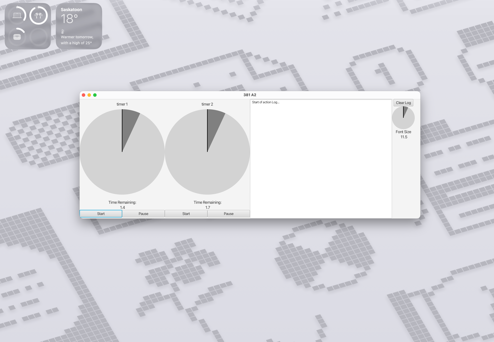
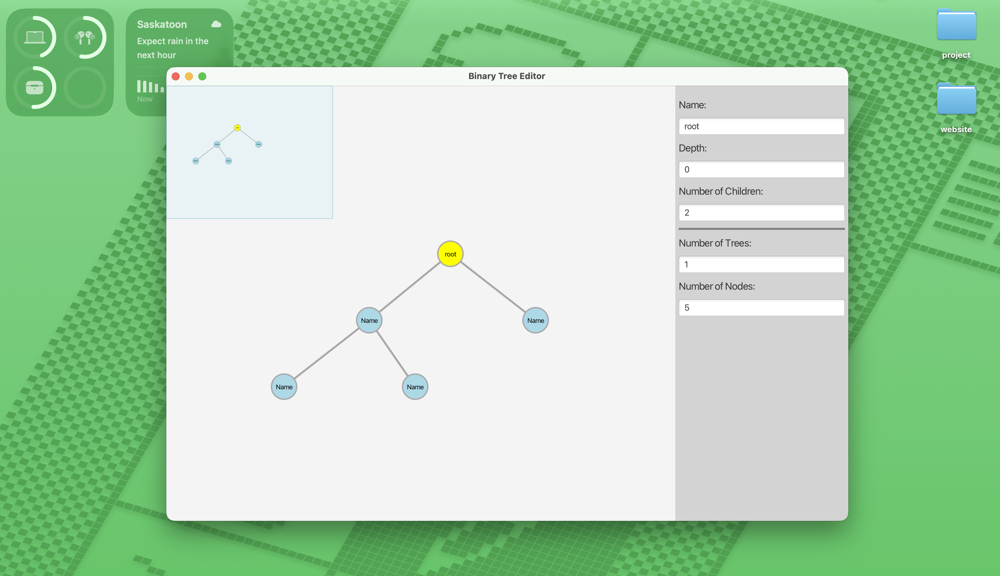
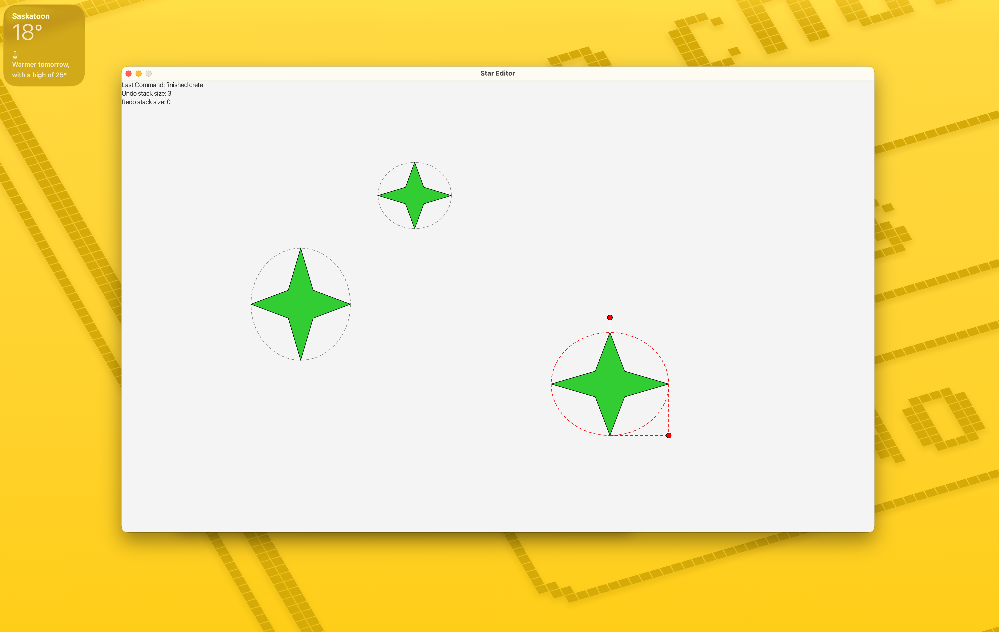
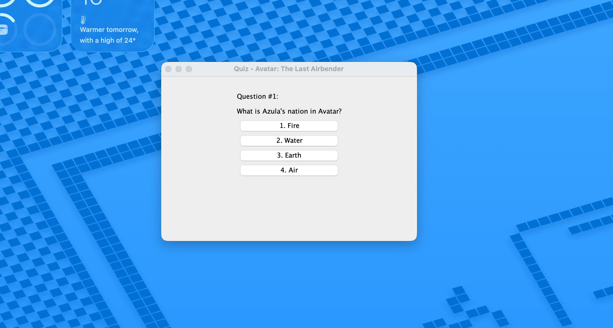

Next Project
Designer & Developer — based in Saskatoon, SK
Hi, I'm Tanakan(Tan) Sojisirikul — a designer and developer based in Saskatoon, SK.
I'm a graduate of the University of Saskatchewan with a B.Sc. in Computer Science, focusing on graphical user interfaces (UI) and full-stack web development, plus a background in Electrical Engineering (B.E.).
I have experience developing desktop apps in JavaFX and Java Swing, building custom UI components and interactive graphics using MVC architecture, as well as working on full-stack web projects using tools like React, Node.js, Docker, Express, and databases such as MySQL.
Recent Work

Composite Widgets
A JavaFX desktop app built from custom, reusable composite widgets, including draggable dial controls and countdown timers, demonstrating skill in UI design, event handling, and responsive layout.

MVC, Interaction, and Multiple Views
An interactive JavaFX binary tree editor built using a full Model-View-Controller (MVC) architecture, featuring node creation, drag-and-drop editing, an overview mini-map with panning, and a live properties panel for real-time tree editing.

Interactive Creation, Handles, Multi-Select, Grouping, and Undo
An interactive JavaFX application where users draw, resize, and rotate star shapes on a canvas, select and group multiple items together, and undo or redo any action, all built with a full Model-View-Controller (MVC) architecture and transform-based graphics.

Console & GUI Application
A Java quiz application with both console and Swing GUI interfaces that presents questions one at a time and automatically grades and displays the final score.